Support & FAQ
Welcome to the InstantLog support page. Here you can find answers to common questions or contact us directly.
📱 App Screenshots
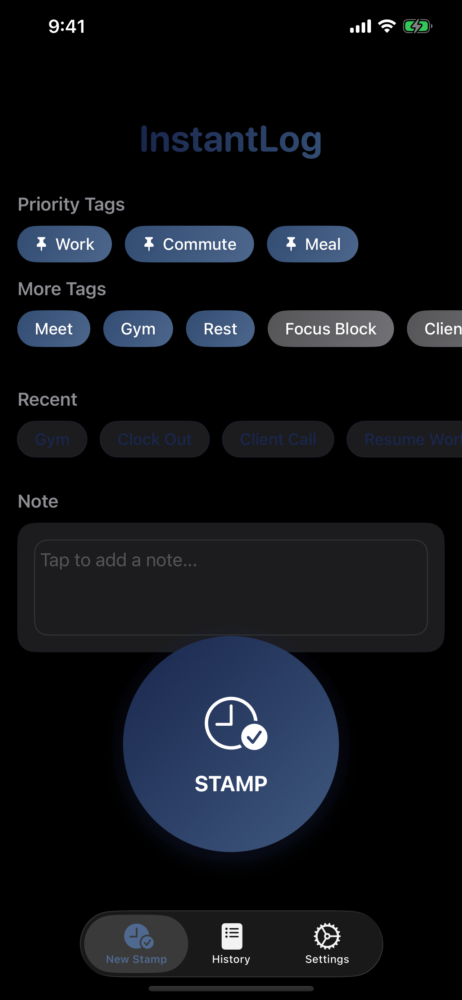
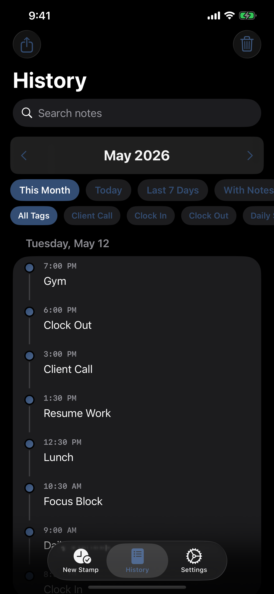
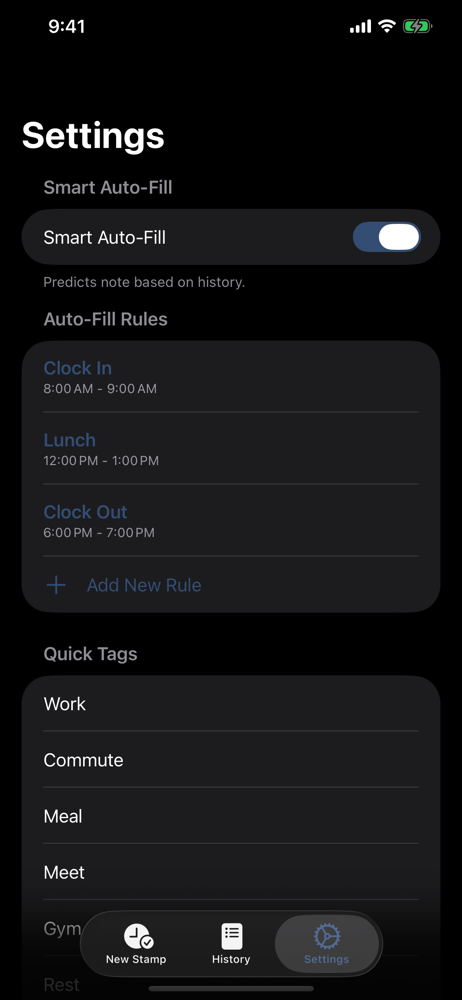
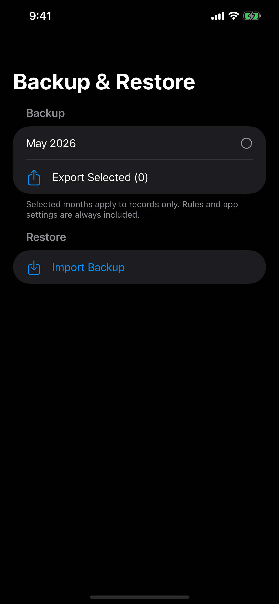
📚 Frequently Asked Questions (FAQ)
1. How do I delete a record?
Swipe left on any record in the History view to reveal delete and edit actions. If you want to remove an entire month, open the History tab, switch to the month you want, and use the trash button in the top-right corner.
2. How does Smart Auto-Fill work?
InstantLog analyzes your past records. If you often log "Lunch" at 12:00 PM, the app will suggest "Lunch" when you stamp around that time again. You can also set explicit rules in Settings to customize your auto-fill preferences.
3. Can I search or filter my history?
Yes. In the History tab you can search notes, switch between Today, Last 7 Days, This Month, or With Notes, and use quick tag filters to narrow down matching records faster.
4. How do Quick Tags work?
Quick Tags can be managed in Settings > Quick Tags. The first three tags in that list appear first on the stamp screen as priority tags, so you can reorder them there to match your most common actions.
5. How do I backup my data?
Go to Settings > Data Management > Backup & Restore. InstantLog backups now include selected records, Auto-Fill Rules, Quick Tags, and Smart Auto-Fill settings. After restore, the app also shows an import summary so you can confirm what was recovered. This is a Premium feature.
6. How do I export a CSV report?
Go to the History tab and tap the export icon in the top left corner. You can generate a CSV file containing the records currently shown by your History filters, which is useful for Excel or printing. Export is a Premium feature.
7. Does the app work without internet?
Yes. Your logs are stored locally on your device. Internet access is only needed for services such as loading ads or sending support email.
8. Does the Watch App work offline?
Yes. You can stamp from Apple Watch even when your iPhone is not nearby. The Watch app now shows more detailed sync status and the last synced stamp, so you can tell whether a stamp has already reached your iPhone or is still waiting for reconnection.
9. Does InstantLog support widgets?
Yes. InstantLog includes Home Screen widgets for quick logging. On supported widget sizes, you can stamp immediately or use quick tags without opening the full app.
10. What does Premium unlock?
Premium unlocks CSV export and Backup & Restore features. It also removes banner ads from the iPhone app.
Still need help?
If you couldn't find the answer you were looking for, our support team is here to help!
📧 Contact SupportEmail: piscesweilun.studio@gmail.com
支援中心與常見問題
歡迎來到瞬記 (InstantLog) 支援頁面。您可以在這裡找到常見問題的解答，或直接與我們聯繫。
📱 應用程式截圖
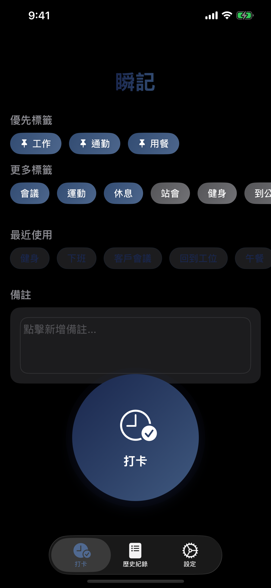
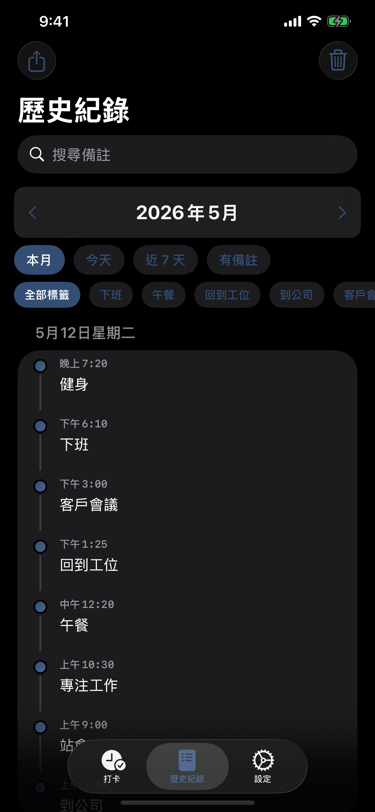
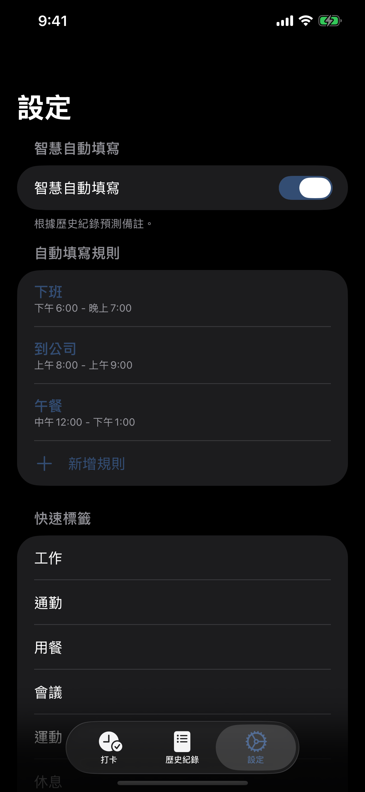
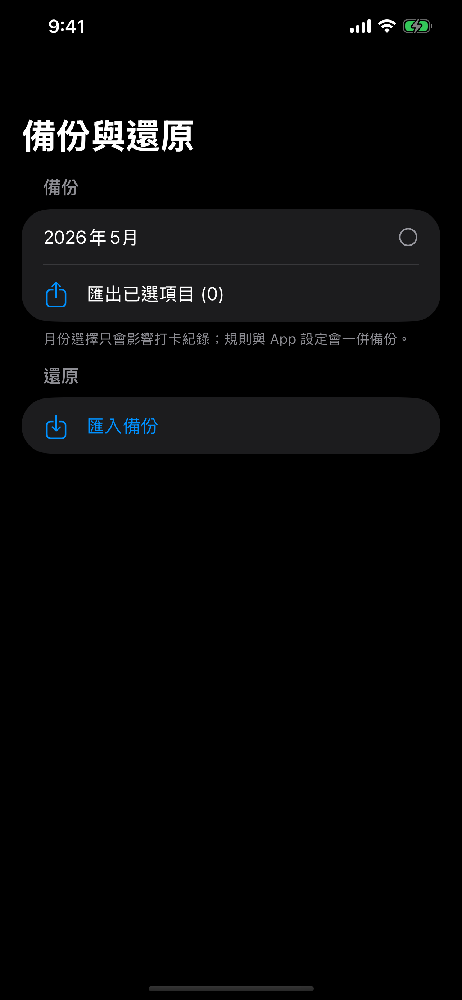
📚 常見問題 (FAQ)
1. 如何刪除紀錄？
在「歷史紀錄」頁面中，將任何一筆紀錄向左滑動，即可看到刪除與編輯操作。若要刪除整個月份的資料，可以切到該月份後，使用右上角的垃圾桶按鈕。
2. 智慧自動填寫是如何運作的？
InstantLog 會分析您過去的紀錄習慣。例如，若您經常在中午 12 點記錄「午餐」，下次在這個時間打卡時，App 便會自動建議「午餐」。您也可以在「設定」中自行建立規則來自訂自動填寫。
3. 可以搜尋或篩選歷史紀錄嗎？
可以。在「歷史紀錄」頁面中，您可以搜尋備註內容，也可以切換今天、近 7 天、本月、有備註等篩選條件，並搭配快速標籤進一步縮小結果範圍。
4. 快速標籤是怎麼運作的？
您可以在 設定 > 快速標籤 中管理與排序 Quick Tags。列表中的前 3 個標籤會優先顯示在打卡頁，因此可以把最常用的項目排在最前面。
5. 如何備份資料？
請前往 設定 > 資料管理 > 備份與還原。InstantLog 現在的備份除了紀錄外，也會一起包含自動填寫規則、快速標籤與智慧自動填寫設定。匯入完成後，App 也會顯示摘要，讓您確認恢復了哪些內容。這是一項進階功能。
6. 如何匯出 CSV 報表？
請前往「歷史紀錄」頁面，點擊左上角的匯出圖示。您可以將目前歷史頁篩選後顯示的紀錄匯出為 CSV 檔案，方便使用 Excel 分析或列印。匯出是進階功能。
7. 沒有網路可以使用嗎？
可以。所有打卡資料都儲存在您的裝置本機。只有像廣告載入或寄送支援信件等功能才需要網路。
8. Apple Watch 版可以離線使用嗎？
可以。即使沒有帶手機或暫時沒有連線，您仍然可以在 Apple Watch 上打卡。手錶現在也會顯示更清楚的同步狀態與最後同步成功的內容，方便確認資料是否已經傳回 iPhone。
9. 支援 Widget 嗎？
支援。InstantLog 提供主畫面 Widget，可快速打卡；在支援的 widget 尺寸上，也可以直接使用快速標籤，不必每次都開啟完整 App。
10. 進階版解鎖什麼？
進階版可解鎖 CSV 匯出與備份還原功能，並移除 iPhone App 內的橫幅廣告。
サポートとよくある質問
InstantLog のサポートページへようこそ。よくある質問への回答や、お問い合わせ方法をご案内しています。
📱 アプリのスクリーンショット
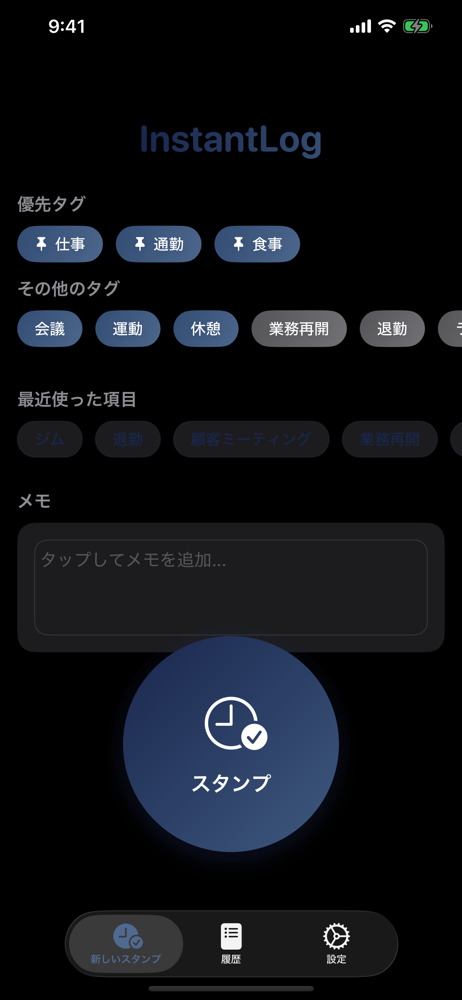
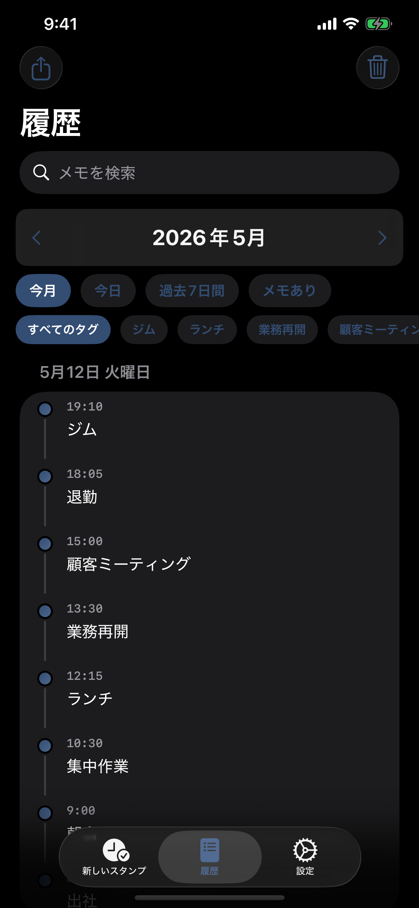
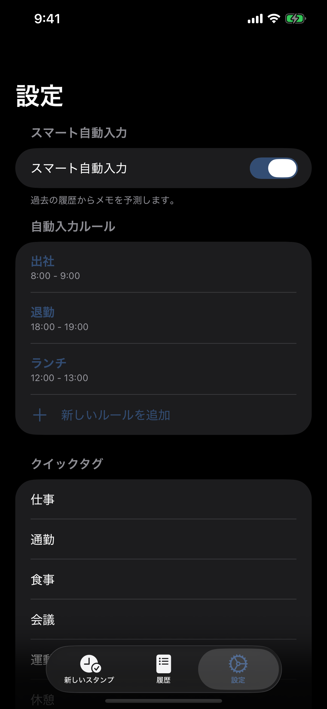
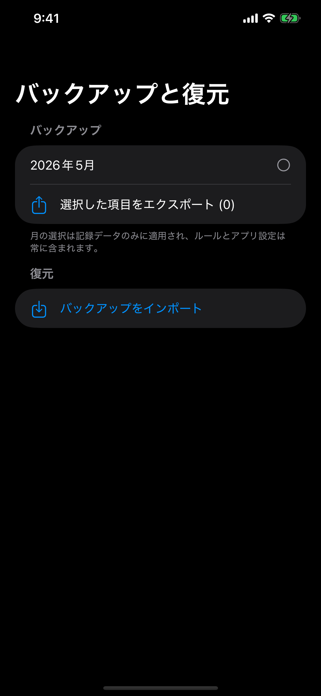
📚 よくある質問 (FAQ)
1. 記録を削除するには？
履歴画面で任意の記録を左にスワイプすると、削除と編集の操作が表示されます。月全体のデータを削除したい場合は、対象の月を表示して右上のゴミ箱ボタンを使ってください。
2. スマート自動入力はどのように動作しますか？
InstantLog は過去の記録傾向をもとにメモを提案します。たとえば、12時頃によく「ランチ」を記録している場合、その時間帯にスタンプすると「ランチ」が候補として入りやすくなります。設定画面で明示的なルールを作成して、自動入力内容を細かく調整することもできます。
3. 履歴の検索やフィルタはできますか？
はい。履歴タブではメモ検索に加え、今日、過去 7 日間、今月、メモあり、といった条件で絞り込めます。さらにクイックタグのフィルタを使うと、目的の記録をより素早く見つけられます。
4. Quick Tags はどのように使いますか？
Quick Tags は 設定 > Quick Tags で管理できます。リストの先頭 3 件はスタンプ画面で優先表示されるため、よく使うタグを上に並べると便利です。
5. データのバックアップ方法は？
設定 > データ管理 > バックアップと復元 を開いてください。現在のバックアップには選択した記録だけでなく、自動入力ルール、Quick Tags、スマート自動入力設定も含まれます。復元後にはインポート概要も表示されるため、何が戻ったか確認できます。これはプレミアム機能です。
6. CSV レポートをエクスポートするには？
履歴タブ左上のエクスポートアイコンをタップしてください。履歴画面で現在フィルタ表示されている記録を CSV として出力でき、Excel での集計や印刷に利用できます。エクスポートはプレミアム機能です。
7. オフラインでも使えますか？
はい。記録データは端末内に保存されます。インターネット接続が必要なのは、広告の読み込みやサポートへのメール送信など一部の機能だけです。
8. Apple Watch アプリはオフラインでも使えますか？
はい。iPhone が近くになくても Apple Watch からスタンプできます。Watch アプリでは同期状態や最後に同期されたスタンプも確認できるため、すでに iPhone に届いているか、再接続待ちかを把握しやすくなっています。
9. Widget に対応していますか？
はい。InstantLog にはホーム画面ウィジェットがあり、すばやくスタンプできます。対応サイズではクイックタグから直接記録することもできます。
10. プレミアムで何が使えるようになりますか？
プレミアムでは CSV エクスポートとバックアップ/復元機能が利用でき、iPhone アプリ内のバナー広告も非表示になります。